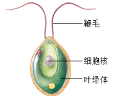
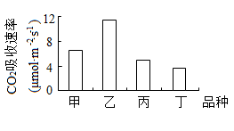
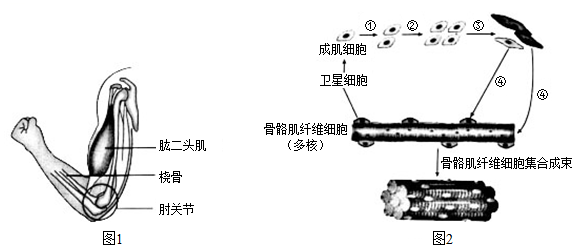
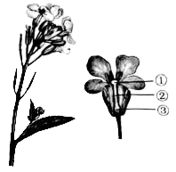
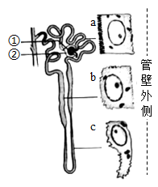
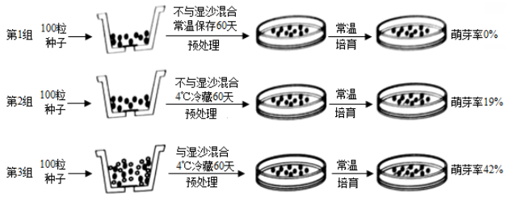
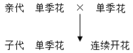

2019年北京市中考生物试题 原卷解析
2019年北京市中考生物试题
一、选择题
1. 控制物质进出人体肝脏细胞 结构是（ ）
结构是（ ）
A. 细胞壁B. 细胞膜C. 细胞质D. 细胞核
【答案】B
【解析】
【分析】此题可根据细胞的结构和各结构的功能解答。
【详解】细胞壁是植物细胞的结构，起保护和支持细胞的作用，A不符合；细胞膜具有控制物质进出的作用，B符合；细胞膜以内、细胞核以外的部分称为细胞质，细胞质能够流动，C不符合；细胞核内含有遗传物质，是细胞的控制中心，D不符合。
【点睛】本题考查的是细胞的结构和功能，要求掌握。
2. 如图，衣藻是生活在水中的单细孢藻类能独立完成生命活动。下列叙述错误的是（ ）

A. 可在水中自由活动B. 通过神经进行调节
C. 自己制造有机营养D. 能够排出代谢废物
【答案】B
【解析】
【分析】衣藻是单细胞藻类，一个细胞可以完成全部的生命活动。
【详解】衣藻可通过鞭毛的运动在水中自由活动，A正确；衣藻是单细胞生物，单细胞生物不具有神经，B错误；衣藻的细胞内有叶绿体，能够进行光合作用制造有机物，C正确；衣藻虽然只有一个细胞构成，但具有生物的特征，能够排出体内产生的废物，D正确。
【点睛】本题要求掌握的是单细胞生物能独立完成各项生物活动，注意理解。
3. 在草原生态系统中，猛禽与鼠类之间存在捕食关系。下列关于该生态系统的叙述，错误的是（ ）
A. 由生物部分和非生物部分组成B. 能量的根本来源是太阳能
C. 猛禽捕食鼠类完成了物质循环D. 猛禽数量的减少可能会引发鼠害
【答案】C
【解析】
【分析】此题可根据生态系统的组成、生物间的关系、物质和能量的流动解答。
【详解】生态系统是由生物部分和非生物部分组成的。生物部分包括植物、动物、细菌和真菌，非生物部分包括阳光、空气、水、温度等。A正确；生态系统的能量根本来源是植物进行光合作用固定的太阳能，植物通过光合作用储存在有机物中的能量，通过食物链和食物网流向动物体内。B正确；猛禽捕食鼠类，从鼠类体内摄取有机物，供生命活动需要，同时产生二氧化碳和尿素等废物，这些物质可以被生产者利用，促进了物质循环，而不是完成物质循环。C错误；猛禽以鼠为食，猛禽数量的减少，会导致鼠类失去天敌而大量增加，可能会引发鼠害，D正确。
【点睛】此题考查的知识包括：生态系统的组成、生态系统中能量的来源和物质的流动以及生物间的关系，要求掌握。
4. 砂生槐是西藏高原生态恢复的理想树种，具有较高的生态效益。为初步筛选适合西藏某地区栽培的品种，研究人员测定了4个砂生槐品种幼苗的CO2吸收速率，结果如图。下列相关叙述错误的是（ ）

A. 4种幼苗应在相同光照强度下进行检测
B. 砂生槐进行光合作用的场所是叶绿体
C. CO2吸收速率可以反映光合作用速率
D. 丁品种砂生槐适合选为该地区极培品种
【答案】D
【解析】
【分析】此图表示的是CO2吸收速率，CO2吸收速率越大，光合作用越强。图中乙品种的CO2吸收速率最大，丁品种的CO2吸收速率最小。
【详解】此图是测定4个砂生槐品种幼苗的CO2吸收速率，以形成对比，因此4种幼苗应在相同光照强度下进行检测。A正确；叶绿体是绿色植物进行光合作用的场所，光合作用是绿色植物通过叶绿体，利用光能，将二氧化碳和水转化成储存能量的有机物，并且释放出氧气的过程。B正确；CO2吸收速率可以反映光合作用速率，CO2吸收速率越大，表示光合作用越强。C正确；图中乙品种的CO2吸收速率最大，丁品种的CO2吸收速率最小，丁品种砂生槐不适合选为该地区极培品种。D错误。
【点睛】此题要求掌握的是学会比较直方图，并且理解CO2吸收速率与光合作用的关系。
5. 裂叶山楂是比较耐旱的植物，观察发现其叶片的气孔只分布在下表皮，该特点利于降低（ ）
A. 蒸腾作用B. 呼吸作用C. 储藏作用D. 光合作用
【答案】A
【解析】
【分析】气孔是植物蒸腾作用的“门户”，也是气体交换的“窗口”。气孔是由一对半月形的保卫细胞围成的空腔，一般植物的上表皮气孔较少，下表皮气孔较多。
【详解】裂叶山楂是比较耐旱的植物，其特点是要储存水分，减少水分的散失。裂叶山楂叶片的气孔只分布在下表皮，该特点利于降低蒸腾作用。D符合题意。
【点睛】此题考查的是对叶片的气孔与蒸腾作用关系的掌握。
6. 下列关于“探究发生在口腔内的化学消化”实验的叙述，错误的是（ ）

A. 唾液腺分泌的唾液中含有淀粉酶
B. 淀粉液与清水或唾液应充分混合
C. 两试管置于37℃条件下反应一段时间
D. 充分反应后滴加碘液，乙试管中液体变蓝
【答案】D
【解析】
【分析】此题是科学探究题，在探究中要形成对照实验并且有单一变量，这个变量是唾液淀粉酶，在对照实验中其他条件都应一样。
【详解】唾液腺分泌的唾液中含有淀粉酶，唾液淀粉酶能对淀粉起消化作用。A正确；为使唾液淀粉酶能对淀粉进行充分的消化，淀粉液与清水或唾液应充分混合。B正确；37℃接近人体温度，有利于酶对淀粉的分解，因此两试管置于37℃条件下反应一段时间。C正确；乙试管中加入的是唾液，唾液能消化淀粉，因此滴加碘液乙试管中液体不变蓝。D错误。
【点睛】本题要求掌握的是“唾液淀粉酶对淀粉的消化作用”实验的具体步骤，应学会辨别。
7. 实验观察某种哺乳动物的心脏，下列对观察结果的描述错误的是（ ）
A. 心房位于心室的上方B. 左心室壁比右心室壁厚
C. 动脉瓣朝心室方向开D. 肺静脉与左心房相连
【答案】C
【解析】
【分析】心脏的四个腔分别是：左心房、左心室、右心房、右心室。左心房连通肺静脉，左心室连通主动脉，右心房连通上、下腔静脉，右心室连通肺动脉。
【详解】心脏四个腔中，心房在上，心室在下，心房位于心室的上方。A正确；左心室连通主动脉，心室壁收缩时将血液泵出流向全身各处；右心室连通肺动脉，心室壁收缩时将血液泵出流向肺部。左心室的血液流经途径比右心室途径长，因此左心室壁比右心室壁厚。B正确；在心房与心室之间有房室瓣，心室与动脉之间有动脉瓣，房室瓣朝心室方向开，动脉瓣朝动脉方向开。C错误；肺静脉与左心房相连，血液由肺静脉流入左心房。D正确。
【点睛】此题考查的是对心脏四个腔的位置、连通的血管和血液流经途径的掌握。
8. 我国倡导无偿献血。献血时一般从献血者肘窝处的静脉采血，而非动脉采血，下列解释错误的是（ ）
A. 静脉在皮下分布大多较浅B. 静脉管径较大、管壁薄
C. 静脉内血流速度较快D. 静脉采血后容易止血
【答案】C
【解析】
【分析】此题可根据静脉的特点分析解答。
【详解】静脉的特点是：在皮下的分布大多较浅，如我们手臂上的“青筋”；管径较大、管壁薄；这样的特点采血时更易寻找并且针头容易刺入。血液是流经毛细血管后流入静脉，压力较低，因此静脉管内血流速度较慢，采血后容易止血。ABD正确。C错误
【点睛】本题要求掌握的是静脉的特点在医学上的应用。
9. 肺是人体呼吸系统的主要器官。下列叙述错误的是（ ）
A. 外界气体经过呼吸道进入肺
B. 肺泡数量多，气体交换面积大
C. 肺泡与毛细血管气体交换后肺泡内氧气含量增加
D. 胸廓容积变小时，肺收缩，气体从肺内排出
【答案】C
【解析】
【分析】肺是人体呼吸系统的主要器官，是气体交换的场所，由许多肺泡构成。
【详解】外界气体经过呼吸道进入肺，呼吸道不仅能保证气体顺畅通过，而且能对吸入的气体进行处理，使到达肺部的气体温暖、湿润、清洁。A正确；肺泡外面包绕着丰富的毛细血管，有利于肺泡与血液充分的进行气体交换，肺泡数量多，气体交换面积大。B正确；肺泡与毛细血管进行气体交换时，肺泡内的氧气扩散进入血液，血液里的二氧化碳扩散进入肺泡，所以肺泡内二氧化碳含量增加。C错误；呼气时，呼吸肌舒张，胸廓容积变小，肺收缩，气体从肺内排出。D正确。
【点睛】此题考查的是肺与外界的气体交换和肺泡与血液的气体交换，要求理解并掌握。
10. 北京电视台在国内最早推出手语节目，方便听障人士了解时事新闻。他们观看节目时，图像信息成像于（ ）
A. 角膜B. 晶状体C. 睫状体D. 视网膜
【答案】D
【解析】
【分析】此题可根据眼球的基本结构和功能分析解答。
【详解】角膜无色，透明，可以透过光线；晶状体透明，有弹性，像双凸透镜，能折射光线；睫状体内含平滑肌，可调节晶状体曲度；视网膜含有许多对光线敏感的细胞，能感受光的刺激，形成物像。D符合题意。
【点睛】此题要注意区分眼球各结构的功能。
11. 若人体血糖长期较高，可能分泌不足的激素是（ ）
A. 性激素B. 胰岛素C. 甲状腺激素D. 生长激素
【答案】B
【解析】
【分析】此题可根据人体内几种激素的功能和分泌异常时出现的病症解答。若人体血糖长期较高，则可能是患糖尿病。
【详解】性激素是由睾丸（男性）或卵巢（女性）分泌，其作用是促进性器官成熟和第二性征的正常发育、维持性功能。A错误；胰岛素是由胰岛细胞分泌，功能是调节糖在人体内的吸收、利用、转化，降低血糖浓度。分泌过少会患糖尿病，分泌过多患低血糖。B正确；甲状腺激素是由甲状腺分泌，能促进新陈代谢，促进生长发育，提高神经系统的兴奋性。分泌过少时，幼年患呆小症；分泌过多，成年患甲亢。C错误；生长激素是由垂体分泌，功能是调节人体的生长发育。分泌过少，幼年会患侏儒症；分泌过多，幼年患巨人症，成年患肢端肥大症。D错误。
【点睛】本题要求掌握的是激素的功能和分泌异常时的病症，注意梳理并熟记。
12. 大熊猫的性别决定与人类相似。大熊猫体细胞中有21对染色体。雌性大熊猫正常卵细胞的染色体组成为（ ）
A. 20条+XB. 20条+YC. 20对+XXD. 21条+X
【答案】A
【解析】
【分析】生物的体细胞的染色体成对，在形成生殖细胞过程中，每对体细胞的染色体各有一条进入生殖细胞，因此生殖细胞的染色体成单，是体细胞的一半。
【详解】人的性别是由性染色体决定的，性染色体为XY时，是男性，性染色体为XX时，是女性。大熊猫的性别决定与人类相似，体细胞的性染色体为XY时，是雄性，体细胞的性染色体为XX时，是雌性。大熊猫的体细胞中有21对染色体，产生的生殖细胞是21条，那么正常卵细胞的染色体组成为20条+X。A符合。
【点睛】本题要求掌握的是生物体细胞在形成生殖细胞过程中数量的变化。
13. 我国实施计划免疫，有计划地对儿童进行预防接种，以控制传染病。下列叙述错误的是（ ）
A. 疫苗相当于抗原B. 预防接种后体内可产生相应抗体
C. 预防接种是针对特定病原体的免疫D. 接种一次即可终身具有免疫能力
【答案】D
【解析】
【分析】此题可根据抗原和抗体的特点分析解答。
【详解】抗原是指引起人体产生抗体的物质，如病原体。接种疫苗可刺激人体的淋巴细胞产生抗体，疫苗相当于抗原。A正确；预防接种属于计划免疫，是根据某些传染病的发病规律，有计划的给儿童进行接种，以达到预防、控制和消灭相应传染病的目的。预防接种后体内可产生相应抗体。如接种卡介苗可以预防结核病。B正确；预防接种是针对特定病原体的免疫，接种卡介苗可以预防结核病，接种百白破疫苗，可以预防百日咳、白喉和破伤风三种疾病。C正确；一般情况下，接种一次疫苗不可能获得终身免疫。D错误。
【点睛】本题考查的是抗原、抗体和预防接种，要求理解和掌握。
14. 蝙蝠依靠回声定位捕食夜蛾。当二者距离较近时夜蛾作不规则飞行，距离较远时夜蛾直线飞行，以便尽快逃离，这种逃生行为生来就有。下列相关叙述错误的是（ ）

A. 夜蛾可通过感受器接受声音脉冲的刺激
B. 夜蛾的逃生行为属于先天性行为
C. 夜蛾采取不同的策略逃生是自然选择的结果
D. 夜蛾具有不同的逃生策略与蝙蝠捕食无关
【答案】D
【解析】
【分析】此题可根据生物能对刺激作出反应、动物的行为和自然选择的相关内容解答。
【详解】夜蛾可通过感受器接受声音脉冲的刺激，然后作出逃离反应。A正确；夜蛾的逃生行为是生来就有的，由体内的遗传物质决定的行为，属于先天性行为。B正确；夜蛾采取不同的策略逃生，是夜蛾和蝙蝠长期的生存斗争的结果，即自然选择的结果。 C正确；夜蛾具有不同的逃生策略是蝙蝠对夜蛾的选择。D错误。
【点睛】此题考查的是对先天性行为和自然选择的掌握，要注意对概念的理解。
15. 下列相关食物的保存方法，错误的是（ ）
A. 真空包装粽子B. 常温保存熟食C. 灭菌保存牛奶D. 冷藏运输荔枝
【答案】B
【解析】
【分析】食物腐败变质是由于微生物的生长和大量繁殖而引起的，根据食物腐败变质的原因，食品保存要尽量杀死或抑制微生物的生长和繁殖。传统的食品保存方法有盐腌、糖渍、干制（晒干、风干）、烟熏、酒泡等；现代的贮存方法主要有罐藏、脱水、冷冻、真空包装、添加防腐剂等。
【详解】真空包装有利于抑制食品内好氧菌的生长和繁殖，达到食品保存的目的。A正确；常温情况下，微生物容易大量生长和繁殖，使食物腐败变质，不利于食物保存。B错误；灭菌保存牛奶，是将牛奶中的微生物杀死。C正确；冷藏是利用低温抑制微生物繁殖，并且能降低荔枝的呼吸作用，有利用水果的保存。D正确。
【点睛】本题考查的是根据食物腐败变质的原因科学的保存食物，要求掌握并能在日常中应用。
二、非选择题
16. 体育运动能增强体质、培养意志品质，对中学生的全面发展具有重要影响。

（1）负重屈肘能锻炼上肢力量。据图1所示，该运动中肱二头肌牵拉桡骨绕______活动。肱二头肌收缩所需要的能量是由肌肉细胞通过______释放的。
（2）运动方式不当或强度过大会造成骨骼肌损伤。损伤后修复过程如图2。骨骼肌纤维细胞表面附着的卫星细胞会转化为成肌细胞。成肌细胞可通过①②_______过程增加数量，再经过③④______过程发育成骨骼肌纤维细胞。若干骨骼肌纤维细胞集合成束形成______，完成修复。
（3）骨骼肌修复是有一定限度的，为减少损伤发生，可采取的科学运动方式有______(多选)。
a.运动前做好准备活动 b.运动中做好保护措施
c.长时间超负荷地运动 d.运动后做好拉伸放松
【答案】 ①. 关节 ②. 呼吸作用 ③. （细胞）分裂 ④. （细胞）分化 ⑤. 肌肉组织 ⑥. abd
【解析】
【分析】此题可根据运动的产生、生命活动需要的能量、科学的运动方式以及细胞的分裂、分化去分析解答。图中①②表示细胞的分裂，使细胞数目增多；③④表示细胞分化，形成组织。
【详解】（1）屈肘时，肱二头肌受到神经传来的刺激，牵拉桡骨绕关节活动；肱二头肌收缩所需要的能量是由肌肉细胞通过呼吸作用释放的，呼吸作用为生命活动提供能量。
（2）①②表示细胞的分裂，使细胞数目增多，成肌细胞可通过①②细胞的分裂增加数量；③④表示细胞分化，形成了形态相似，结构和功能相同的细胞群，即组织。分裂后的细胞通过③④细胞分化过程发育成骨骼肌纤维细胞，骨骼肌纤维细胞是形态相似，结构和功能相同的细胞联合在一起的细胞群，若干骨骼肌纤维细胞集合成束形成肌肉组织。
（3）根据科学运动的常识，运动前应做好准备活动，活动肌肉和关节；运动中做好保护措施，以免运动带来的伤害；运动后做好拉伸放松，缓解运动时的紧张和消除肌肉疲劳。长时间超负荷地运动，容易造成肌肉和关节过度疲劳甚至损伤。因此可采取的科学运动方式有abd。
【点睛】本题要求掌握知识有：运动的产生、生命活动能量的提供、细胞的分裂和分化以及科学的运动方式。
17. 同学们在学科实践活动中观察了萝卜的生长发育过程，了解了萝卜在生产、生活中的应用。
（1）萝卜是十字花科植物。如图为其花的结构，经过传粉和_____作用后，_____(填图中序号)会发育成为果实，内有种子。

（2）萝卜的种子又称为莱菔子，古代医学典籍《日华子本草》中记载了它的药用价值。莱菔子中的药用成分黄酮具有抗氧化等作用。同学们对三个品种的萝卜种子进行了黄酮含量的比较，得到如下结果：
萝卜种子 | 青萝卜 | 白萝卜 | 红萝卜 |
种子中黄酮含量（%） | 0.375 | 0.334 | 0.456 |
据表可知，为获得较高的黄酮含量，应选______的种子作为主要的入药品种。
（3）萝卜的食用部分主要是变态根，其中含有丰富的糖分和膳食纤维。从有机物的合成和运输角度分析，变态根中有机物是______而来的。同学们用萝卜根制作泡菜应用了______技术。
【答案】 ①. 双受精 ②. ③ ③. 红萝卜 ④. 光合作用合成后，由筛管运输 ⑤. 发酵
【解析】
【分析】此题可根据开花和结果、光合作用以及生物技术等分析解答。图中①是柱头；②是花柱；③是子房，发育成果实。
【详解】（1）萝卜花开放以后，经过传粉过程后完成双受精作用。花粉落到①柱头上，在柱头上黏液的刺激下开始萌发，长出花粉管。花粉管穿过花柱，进入子房，一直到达胚珠。花粉管内的两个精子，一个与胚珠里的卵细胞结合形成受精卵，另一个与极核结合形成胚乳。受精完成后，③子房发育成果实，其中子房壁发育成果皮，子房里的胚珠发育成种子。
（2）据表可知，青萝卜种子中黄铜含量最少，红萝卜种子中黄铜含量最多。为获得较高的黄酮含量，应选红萝卜的种子作为主要的入药品种。
（3）萝卜的变态根中有机物是萝卜叶进行光合作用合成后，由筛管运输而来的。光合作用制造有机物，释放出氧气，叶片制造的有机物通过筛管往下运输到根。同学们用萝卜根制作泡菜应用了发酵技术，是利用乳酸菌发酵制作成的。
【点睛】本题考查了对双受精、子房的发育、光合作用和利用发酵技术制作食品等知识的掌握。
18. 肾脏是人体主要的排泄器官。膳食结构不合理会加重肾脏的负担。

（1）食物中营养物质消化和吸收的主要器官是______。
（2）肾单位是尿液形成的基本单位，如图为其结构示意图。图中①具有______作用，可使血液中的小分子物质进入②______形成原尿。原尿经过肾小管的重吸收作用，最终形成尿液。
（3）显微观察发现，肾小管不同区段的上皮细胞形态结构存在差异，如图a、b、c所示。其中a细胞所在区段是重吸收的主要部位，推测原因是_______。
（4）研究人员发现用高脂饲料饲喂的健康小鼠，12周后尿液中含有较高浓度的白蛋白。据此判断，长期高脂饮食会导致小鼠肾单位中的______受损，通透性增大。
（5）研究表明，长期高脂饮食还会引起高血压和肥胖等症状。《中国膳食指南)建议成年人每天烹调油用量为25~30g。据此提出一条健康饮食的措施：_______。
【答案】 ①. 小肠 ②. 滤过（过滤） ③. 肾小囊 ④. 细胞表面有微绒毛，增大了其吸收面积，体现了结构与功能相适应的生命观念 ⑤. 肾小球及肾小囊内壁 ⑥. 适当、适量摄取油脂，多吃水果蔬菜
【解析】
【分析】此题可根据小肠的功能、肾单位的结构和功能、以及合理营养等知识分析解答。图中①是肾小球，有过滤作用；②是肾小囊，肾小球过滤后的小分子物质进入肾小囊中形成原尿。
【详解】（1）食物中营养物质消化和吸收的主要器官是小肠。小肠很长；内表面有环形皱襞和小肠绒毛；小肠绒毛内有丰富的毛细血管；小肠内有多种消化液，这些特点都有利于营养物质的消化和吸收。
（2）图中①肾小球具有过滤作用，除血细胞和大分子蛋白质以外，血浆中的小分子物质如水、无机盐、葡萄糖和尿素等都经过肾小球过滤进入②肾小囊中形成原尿。原尿经过肾小管的重吸收作用，最终形成尿液。
（3）图中a细胞所在区段是重吸收的主要部位，能够重吸收全部葡萄糖，大部分水和部分无机盐，推测原因是细胞表面有微绒毛，增大了其吸收面积，体现了结构与功能相适应的生命观念。
（4）尿液的成分是水、无机盐和尿素，不会出现血细胞和大分子蛋白质。如果尿液中含有较高浓度的白蛋白，是肾小球出现病变。据此判断，长期高脂饮食会导致小鼠肾单位中的肾小球及肾小囊内壁受损，通透性增大。
（5）《中国膳食指南)建议成年人每天烹调油用量为25~30g，根据“平衡膳食宝塔”可知，人体每天饮食中需要的含维生素类的食物排第二位，而需要的油脂类是一天饮食中含量最少的。由此提出一条健康饮食的措施：适当、适量摄取油脂，多吃水果蔬菜。
【点睛】此题要求掌握的是：营养物质消化和吸收的主要器官、肾单位的结构和功能以及合理营养等知识，注意梳理清楚。
19. 月季是北京市市花，具有较高的观赏价值，为了培育可以连续开花(花期较长)的月季新品种，生物小组进行系到实验。

（1）同学以单季花月季（花期较短）为亲代进行杂交，获得子代种子若干，月季种子存在休眠现象，自然萌发率很低，为探究打破种子休眠的条件，进行了如下实验：
①比较第1、2组实验结果，说明打破种子休眠的温度为_______。
②比较______两组实验结果，说明湿沙也是打破种子休眠的影响因素。
③为进一步探究仅有湿沙条件是否可以打破种子休眠，需要增设第4组实验。第4组实验的预处理是______。
④若第4组实验种子几乎不萌发，综合上述信息，得出的结论是______。
a.低温条件和湿度条件均可以打破种子休眠，且湿度条件更为重要
b.在低温条件和湿度条件同时存在的情况下，才能打破种子休眠
c.低温可以打破休眠，湿度可以促进该效果，但仅有湿度不能打破休眠
（2）同学们将已萌发的种子培育至开花，观察植株花期长短的性状，结果如下：

单季花和连续开花是一对相对性状。由结果可知，连续开花为_____性状。花期长短性状受一对基因控制(用A和a表示)，连续开花植株的基因组成是______。
（3）若要在短期内，大量获得连续开花月季植株，可采取的具体方法为：______。
【答案】 ①. 4 ℃ ②. 2组和3组 ③. 与湿沙混合，常温保存60天 ④. C ⑤. 隐性 ⑥. aa ⑦. 通过扦插这种营养繁殖的方法
【解析】
【分析】本题是科学探究题。科学探究要遵循的一般原则是：单一变量原则和对照原则。由三组实验可以得出：第1和第2组的变量是温度；第2组和第3组的变量为是否与湿沙混合。另外此题还要结合生物的生殖与基因的显性和隐性分析解答。
【详解】（1）①第1和第2组的变量是温度，比较第1、2组实验结果，常温处理种子萌发率为0，4 ℃冷藏处理种子萌发率是19％，说明打破种子休眠的温度为4 ℃。
②比较第2组和第3组两组实验结果，第2组和第3组的变量为是否与湿沙混合，不与湿沙混合的萌发率是19％，与湿沙混合的萌发率是42％，说明湿沙也是打破种子休眠的影响因素。
③为进一步探究仅有湿沙条件是否可以打破种子休眠，那么温度应是常温，保证探究的只是湿沙条件，因此设置第4组实验的预处理是与湿沙混合，常温保存60天。与第1组形成对照。
④第4组探究的只是湿沙条件，若第4组实验种子几乎不萌发，说明仅有湿度不能打破休眠，还必须在低温条件下。因此得出的结论是C低温可以打破休眠，湿度可以促进该效果，但仅有湿度不能打破休眠。
（2）亲代都是单季花，子代出现连续开花，子代连续开花表现出的为隐性性状，单季花是显性性状。控制花期长短性状的基因是A和a，显性性状的基因组成是AA或Aa,隐性性状的基因组成是aa,因为连续开花是隐性性状，因此连续开花植株的基因组成是aa。
（3）若要在短期内，大量获得连续开花月季植株，可采取的具体方法为通过扦插这种营养繁殖的方法。扦插属于无性生殖，无性生殖具有繁殖速度快，能够保持母体的优良性状等优点。
【点睛】此题要求掌握的时：理解探究实验中的变量，通过实验现象得出结论，基因的显性和隐性，无性生殖的运用。
20. 阅读科普短文，回答问题。
在金黄的芦苇荡，一对丹顶鹤扇动着美丽的翅膀翩翩起舞。丹顶鹤体态优美、行止有节、鹤鸣悠扬，被人们誉为“仙鹤”。丹顶鹤是我国一级保护动物，主要栖息在沼泽、浅滩和芦苇塘等湿地。它的喙、颈和足都很长、能够捕食湿地中的鱼、虾、昆虫和软体动物，也吃植物的根、茎和种子。丹顶鹤春夏季在东北地区繁殖，就地取材筑巢产卵，雌雄轮流孵卵。约一个月后，雏鸟破壳而出，跟随双亲学习觅食、飞翔等生存技能。幼鹤长到一岁左右就离开双亲独立生活。丹项鹤秋冬季节迁徙到温暖的南方越冬。近年来，由于湿地面积大量减少，丹顶鹤的生存受到严重威胁。为保护丹顶鹤，我国不仅建立了多个自然保护区就地保护，而且在动物园、野生动物保护中心等机构迁地保护，进行了相关研究和种群复壮工作。丹顶鹤幼体容易感染血孢子虫。血孢子虫通过蚊虫叮咬传播，在血细胞内快速繁殖，导致个体患病甚至死亡。为了预防该传染病的发生，北京动物园研究人员将一岁以内的丹顶鹤幼体移至防蚊大棚饲养。持续监测发现，采取该预防措施后，幼鹤未检测到血孢子虫感染。该措施已用于幼鹤野外放归前的阶段饲养。目前北京动物园已有6只丹顶鹤成功放归野外。截止2018年，由各地保护机构放归的16只丹顶鹤中，已有9只成功在野外存活，并有多只在野外繁殖了后代。

（1）丹顶鹤属于_______纲(类)动物，其适应栖息环境的形态特征有_______。
（2）保护丹顶鹤主要措施包括就地保护和_______。
（3）将幼鹤移至防蚊大棚饲养，属于传染病预防措施中的_______。研究人员定期取幼鹤血液制成玻片标本，借助_______观察，监测其是否感染血孢子虫。
（4）野外放归前，研究人员要先对丹顶鹤进行一段时间的野化训练。结合文中信息，你认为需要进行的训练有_______。
【答案】 ①. 鸟 ②. 喙、颈、足都很长 ③. 迁地保护 ④. 切断传播途径 ⑤. 显微镜 ⑥. 觅食、飞翔
【解析】
【分析】此题要结合丹顶鹤的特征、保护丹顶鹤的措施、预防传染病等知识解答。
【详解】（1）丹顶鹤具有鸟类的主要特征：体表被毛，前肢变成翼，有喙无齿，有气囊辅助肺呼吸，属于鸟纲。其适应栖息环境的形态特征有：喙、颈、足都很长。它的足很长，适于栖息在沼泽、浅滩和芦苇塘等湿地环境中；它的喙、颈都很长、有利于捕食湿地中的鱼、虾、昆虫和软体动物。
（2）保护丹顶鹤的主要措施包括就地保护和迁地保护。就地保护是建立自然保护区，迁地保护指将丹顶鹤迁至动物园、野生动物保护中心等机构进行保护。
（3）血孢子虫通过蚊虫叮咬传播，属于生物媒介传播，将幼鹤移至防蚊大棚饲养，防止蚊虫叮咬，属于传染病预防措施中切断传播途径。取幼鹤血液制成玻片标本，是要观察血细胞。细胞是生物体结构和功能的基本单位，必须借助显微镜观察。观察血细胞是监测其是否感染血孢子虫。
（4）野外放归前，研究人员要先对丹顶鹤进行一段时间的野化训练。需要进行的训练有觅食、飞翔。觅食、飞翔等是丹顶鹤基本的生存技能，有利于它的生存和繁衍。
【点睛】本题要求掌握的知识有：丹顶鹤的属于鸟类的特征、适于栖息环境的形态特征、对丹顶鹤的保护措施、以及预防患传染病的措施等，注意在资料中获取信息。